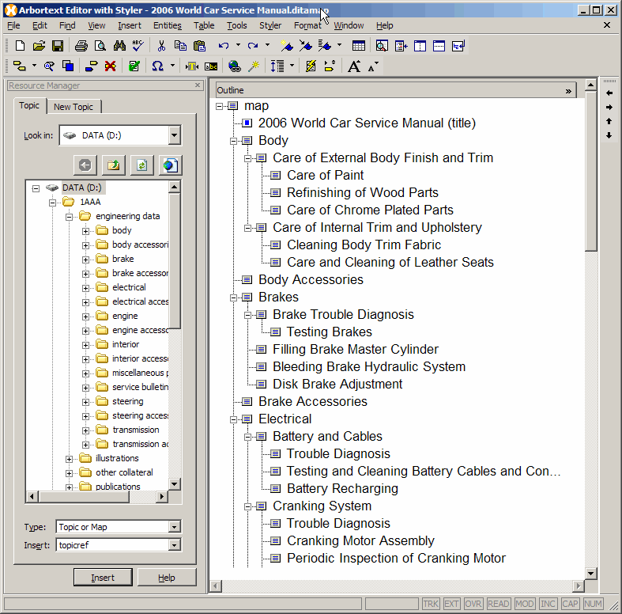

Authoring DITA Maps
DITA maps are used to organize references to DITA topics and other resources for publishing to a specific deliverable, such as online help. DITA maps enable you to define relationships between topics, including hierarchical, an ordered sequence, and peer group relationships. You can use these relationships to define outlines, tables of contents, build manifests, and similar structures. DITA maps also provide a relationship table, where you identify relationships between topics and other resources in a tabular format for generating related links when you publish your DITA map.
When you first open a DITA map, the default Arbortext Editor configuration for editing DITA maps appears. The DITA Application provides an additional dialog called the Resource Manager that enables you to locate content to include in a DITA map, to quickly insert references to one or more documents into the map, and to rearrange the map hierarchy with great flexibility. The Arbortext Editor configuration for editing DITA maps is highly configurable, so you can customize it to suit your work style.
